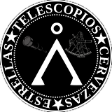

Ir al contenido principal
Astropirados

Blog de los Astropirados, un grupo de astronomos aficionados diferente
Toggle navigation
Archivo
Etiquetas
Canal RSS
Publicaciones sobre perseidas
Canal RSS
2016-08-15 17:30
Perseidas 2016